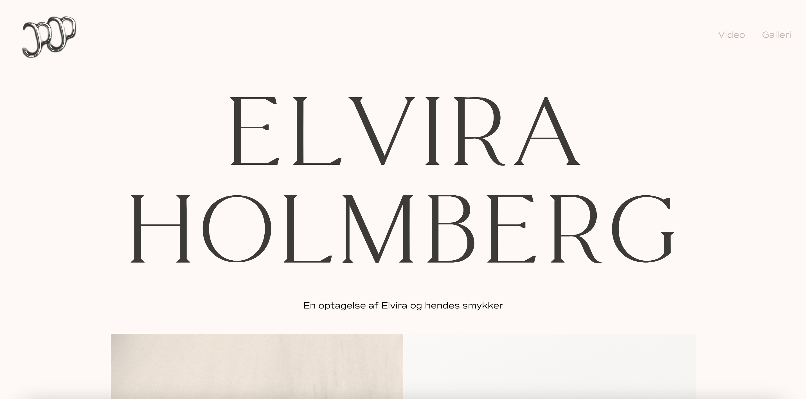
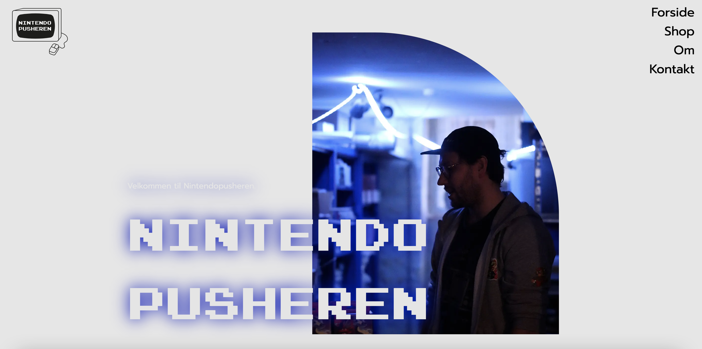

Pilotsite + redesign



Projektet under grundlæggende indhold var vores første gruppeprojekt. Derudover det første
projekt, hvor
vi skulle
arbejde med en reel kunde i erhvervslivet. Vores formål var hovedsagligt at arbejde med
videoproduktion,
lære de faglige
begreber, og bruge den viden vi allerede havde til at redesigne et firmas website. Dog var det
essentielt for projektet,
at vi fokuserede på planlægning, at skabe en god process og et godt gruppesamarbejde.
Før vi gik i gang med det store redesign, skulle vi lave et pilotsite for at prøve teknikker til
videoproduktion af
inden. Vi lærte om blandt andet 5 skuds reglen, hvordan man får den mest optimale lyd og de
basale
funktioner i
programmet Premiere Pro. Vi skulle lave et interview både i pilotsite og redesign, og i videoen til
pilotsitet havde jeg
ikke planlagt det store til interviewet. Det resulterede i at de svar jeg fik på videoen indeholdt meget
”øh” og var
meget usammenhængende. Dette huskede vi på til vores interview til redesignet, og planlagde vores
spørgsmål bedre.
Min rolle i gruppearbejdet var fotograf og grafiker. Jeg tog vores stilbilleder og tegnede grafik til
sitet. Vi ville
skabe et spilunivers på vores site, så jeg tegnede en figur som var Mads fra selve spilbutikken, vi
samarbejdede med, og
brugte flatdesign til dette. Foto stilen var futuristisk med blå neonlys. Dette valgte jeg
da vores stil
skulle være
moderne.
Vi testede både det eksisterende site og vores redesign med testmetoderne BERT, 5 sekunders test
og
eksperttest. Fra
vores tests af det eksisterende site fandt vi frem til, at det var en anelse kedeligt, og der var for
mange
informationer til at kunne finde rundt i. Dette lagde vi da fokus på at ændre i vores redesign. I test
af vores redesign
fandt vi ud af, at det godt kunne være mere sammenhængende, og det viser, at vi kunne have samarbejdet
mere om at skabe
en sammenhængende tråd designmæssigt for eksempel ved hjælp af en mockup.
